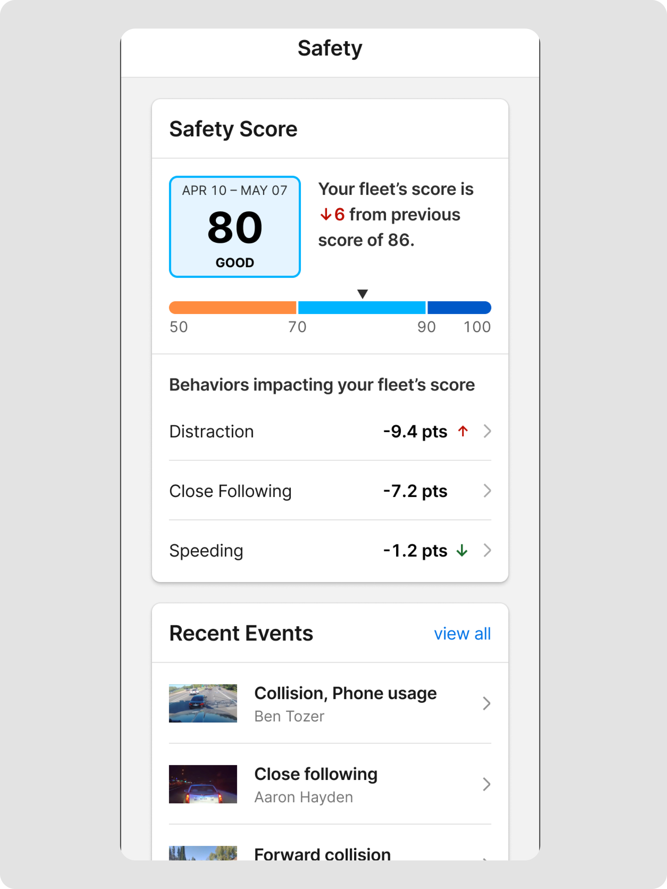
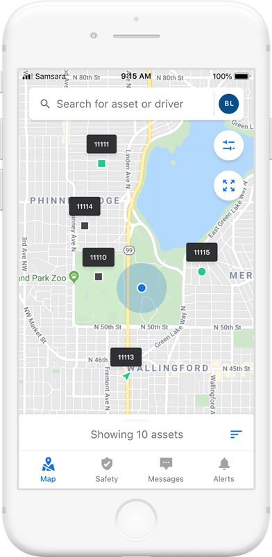

Mobile benchmarkSix short reviews of public phone screens. + helps the task · − adds friction or leaves a gap.Sources ↗
01 / 06 · Motive · Home
Fleet View and Safety
Default Fleet View → Safety tab


02 / 06 · Motive · Events
Event preview, list, and detail
Safety preview → full list → event detail


03 / 06 · Motive · Cameras
Vehicle detail and camera images
Vehicle → Cameras row → recent images

04 / 06 · Motive · Drivers
One driver detail page
Scroll down for Safety; tap its score for more detail


05 / 06 · Samsara · Fleet
Fleet map and vehicle detail
Public manager-phone images


06 / 06 · Samsara · Safety
Safety Inbox and video
App Store images · current UI unverified